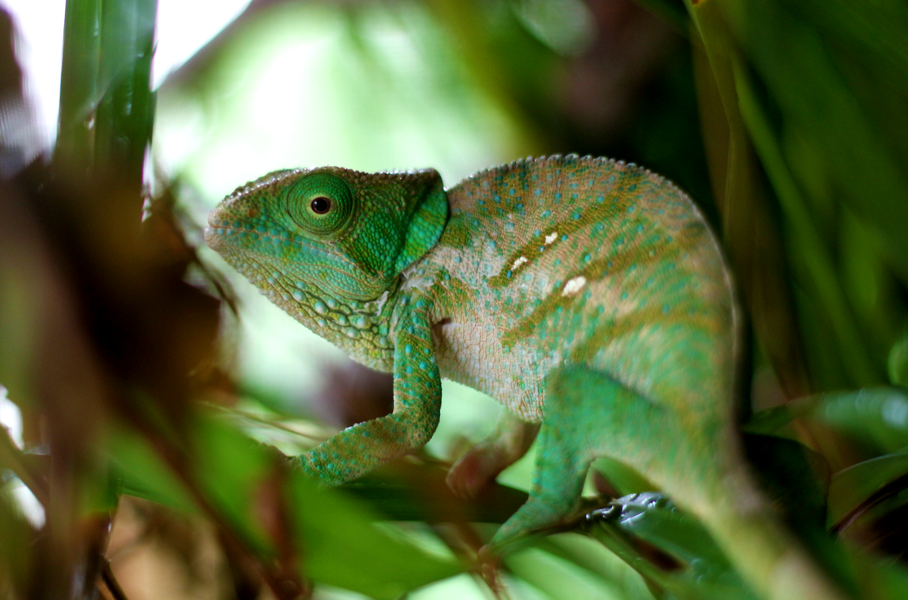

The members of this family are best known for their distinct range of colors, being capable of shifting to different hues and degrees of brightness. The large number of species in the family exhibit considerable variability in their capacity to change color. For some, it is more of a shift of brightness (shades of brown); for others, a plethora of color-combinations (reds, yellows, greens, blues) can be seen.
The members of this family are best known for their distinct range of colors, being capable of shifting to different hues and degrees of brightness. The large number of species in the family exhibit considerable variability in their capacity to change color. For some, it is more of a shift of brightness (shades of brown); for others, a plethora of color-combinations (reds, yellows, greens, blues) can be seen.
Chameleons distinguished by their zygodactylous feet, their prehensile tail, their laterally compressed bodies, their head casques, their projectile tongues, their swaying gait,[2] and crests or horns on their brow and snout. Chameleons' eyes are independently mobile, and because of this there are two separate, individual images that the brain is analyzing of the chameleons environment. When hunting prey, they focus forward in coordination, affording the animal stereoscopic vision.
Chameleons are adapted for climbing and visual hunting. The use of their prehensile tail offers stability when they are moving or resting while on a branch in the canopy; because of this, their tail is often referred to as a "fifth limb." Another character that is advantageous for being arboreal is how laterally compressed their bodies are; it is important for them to distribute their weight as evenly as possible as it confers stability on twigs and branches in the trees. They live in warm habitats that range from rainforest to desert conditions, with various species occurring in Africa, Madagascar, southern Europe, and across southern Asia as far as Sri Lanka. They have been introduced to Hawaii, California, and Florida.[3]
In 1986, the family Chamaeleonidae was divided into two subfamilies, Brookesiinae and Chamaeleoninae.[10] Under this classification, Brookesiinae included the genera Brookesia and Rhampholeon, as well as the genera later split off from them (Palleon and Rieppeleon), while Chamaeleoninae included the genera Bradypodion, Calumma, Chamaeleo, Furcifer and Trioceros, as well as the genera later split off from them (Archaius, Nadzikambia and Kinyongia). Since that time, however, the validity of this subfamily designation has been the subject of much debate,[11] although most phylogenetic studies support the notion that the pygmy chameleons of the subfamily Brookesiinae are not a monophyletic group.
While some authorities have previously preferred to use this subfamilial classification on the basis of the absence of evidence principle,[11] these authorities later abandoned this subfamilial division, no longer recognizing any subfamilies with the family Chamaeleonidae.In 2015, however, Glaw reworked the subfamilial division by placing only the genera Brookesia and Palleon within the Brookesiinae subfamily, with all other genera being placed in Chamaeleoninae.
Some chameleon species are able to change their skin coloration. Different chameleon species are able to vary their coloration and pattern through combinations of pink, blue, red, orange, green, black, brown, light blue, yellow, turquoise, and purple.[17] Chameleon skin has a superficial layer which contains pigments, and under the layer are cells with very small (nanoscale) guanine crystals. Chameleons change color by "actively tuning the photonic response of a lattice of small guanine nanocrystals in the s-iridophores".[18] This tuning, by an unknown molecular mechanism, changes the wavelength of light reflected off the crystals which changes the color of the skin. The color change was duplicated ex vivo by modifying the osmolarity of pieces of white skin.